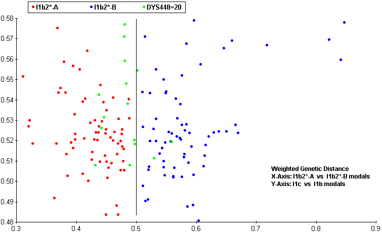
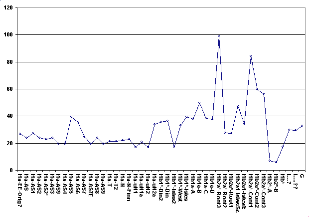

| Follow the above link or click the graphic below to visit the Homepage. |
 | DNA Results Cullens of Upton Jim Cullen |
| 3 9 3 | 3 9 0 | 1 9 | 3 9 1 | 3 8 5 a | 3 8 5 b | 4 2 6 | 3 8 8 | 4 3 9 | 3 8 9 | 1 | 3 9 2 | 3 8 9 | 2 | 4 5 8 | 4 5 9 a | 4 5 9 b | 4 5 5 | 4 5 4 | 4 4 7 | 4 3 7 | 4 4 8 | 4 4 9 | 4 6 4 a | 4 6 4 b | 4 6 4 c | 4 6 4 d | |
|---|---|---|---|---|---|---|---|---|---|---|---|---|---|---|---|---|---|---|---|---|---|---|---|---|---|
| JC | 14 | 25 | 17 | 11 | 13 | 18 | 11 | 13 | 11 | 12 | 11 | 29 | 17 | 8 | 10 | 10 | 12 | 24 | 14 | 19 | 28 | 14 | 15 | 15 | 15 |
| CC | 13 | 25 | 17 | 11 | 13 | 18 | 11 | 13 | 11 | 12 | 11 | 29 | 17 | 8 | 10 | 10 | 12 | 24 | 14 | 19 | 28 | 14 | 15 | 15 | 15 |
| 4 6 0 | G A T A H 4 | Y C A II a | Y C A II b | 4 5 6 | 6 0 7 | 5 7 6 | 5 7 0 | C D Y a | C D Y b | 4 4 2 | 4 3 8 | |
|---|---|---|---|---|---|---|---|---|---|---|---|---|
| JC | 10 | 10 | 19 | 19 | 14 | 13 | 17 | 18 | 35 | 37 | 12 | 10 |
| CC | 10 | 10 | 19 | 19 | 14 | 13 | 17 | 18 | 35 | 36 | 12 | 10 |
| Y-DNA STR Signature of Cullen of Upton, Notts | ||||||
|---|---|---|---|---|---|---|
| 3 8 5 a | 3 8 5 b | 4 5 9 a | 4 5 9 b | 4 5 5 | 4 5 4 | 4 3 7 |
| 13 | 18 | 8 | 10 | 10 | 12 | 14 |


| Regarding the 3ky old sample of DNA from Lower Saxony. I've run my own 'predictor' on the data given for his markers. The scale is relative and a lower score is better, zero is a perfect match. A good match is a low score separated from all the rest of the scores by a respectable margin.
The data given was: DYS393=13, DYS390=25, DYS19=15 DYS391=11, DYS385a,b=13,17 DYS439=11, DYS389i=12, DYS392=11 DYS389ii=27, DYS437=15, DYS438=10 Across the world's haplogroups, the sample scores an average of 50.36 with a min/max range of (19.36-100.63). The score that stands out is Haplogroup I, Ix specifically, with a score of 6.86 J scored 23.39 : I* scored 19.36 : G scored 32.76 I1a scored 23.78 : I1b scored 27.68 : I1c scored 66.46 These are the old naming conventions but it's clear that the data prefers the haplogroups closer to the root of Haplogroup I. Inspection of the markers and simple genetic distance supports this. I then ran the same data through a second 'predictor', specifically for Haplogroup I and its subclades, according to Ken Nordtvedt's naming conventions. This scale is also relative and, since it spans Haplo-I and its subclades specifically, is a separate scale from that given above. Across Haplo-I subclades, the sample scores an average of 33.3 with a min/max range of (17.04-103.63). The two scores that stand out are I1b2*-A with a score of 6.86 and I1b2*-B with a score of 5.82 Again the data prefers subclades closer to the root of the haplogroup, scoring in the area of about 17 for them. I1b* scores 17.26 and I1b1*-Isles2 scores 17.17 which was expected since I1b2* and I1b1*-Isles2 have some similar mutational characteristics to I1b*. The lower score for the B variety of I1b2* should be taken with a grain of salt. DYS385b is the main reason for the lower score but there just isn't enough data to make that call. The scaling system is weighted so additional markers could cause the final scores to drift but I am satisfied, due to good score separation, that the Haplo-I subclade for this data is I1b2* Jim Cullen |

 |